生成时间：2026-10-12T11:32:49+08:00
今日保留论文数：8
内容构成：今日新文 8 篇；补充推荐 0 篇；经典旧文精读 0 篇
阅读分层：重点精读 3 篇；相关简报 5 篇。精读依据科学贡献筛选，简报保留方法、结论及局限。
数据源警告
- 本次有 1 个数据源访问异常；完整错误已保留在运行日志中，日报只显示摘要。
- 其他来源：1 个异常。
- 主要错误类型：其他 1 次。
高能天体物理重点
1. TeV Gamma-Ray Emission in the DA 495 Region from HAWC Observations of J1952+2924, J1954+2837, and J1958+2848
- 来源：arXiv / astro-ph.HE
- 链接：https://arxiv.org/abs/2610.13771
- 作者：R. Alfaro, C. Alvarez, E. Anita-Rangel, M. Araya, J. C. Arteaga-Velázquez, D. Avila Rojas, H. A. Ayala Solares, R. Babu
- 公告 / 来源日期：2026-10-12
- 阅读层级：重点精读
- 评分：novelty 8/10，importance 8/10，relevance 10/10，final 9.70/10
- 推荐理由：3071天HAWC联合空间谱分析解决DA495区源混淆并约束PWN/晕解释，是VHE直接观测推进；关联与轻子唯一性需核查。
中文题目：HAWC 分解 DA 495 周边 TeV 辐射：低磁场风云、慢扩散与两个晕候选
做了什么：DA 495 是一个射电明亮、X 射线较弱的脉冲星风云。过去 HAWC 测得的 TeV 通量与成像大气切伦科夫望远镜 VERITAS 不尽一致，而附近还有多个可能重叠的高能源。作者使用3071天 HAWC 数据，在同一视场同时拟合源的形态、能谱和银河弥散辐射，分出 J1952、J1954、J1958 三个扩展源，再把 DA 495 的射电、X 射线约束、Fermi、VERITAS 与 LHAASO 资料接成宽波段能谱。
在作者采用的单区轻子解释、1 kpc距离及辐射场条件下，DA 495 对应的 J1952 可由约10微高斯磁场和约50 TeV截止电子群解释。该电子群的冷却时间约2300年，短于假定的约2万年年龄，因而谱截止可以来自冷却。形态加上冷却时间给出约1.5×10²⁶ cm²/s的有效扩散估计。另两源在脉冲星供能条件下可作为 TeV 晕候选；这些解释仍依赖背景、距离和源关联，不能等同于已直接测定输运机制。
为什么重要：这项研究把原先混在一个低角分辨率区域里的谱差异，转化成可检验的源分解和背景问题。新数据支持三个有限尺度的扩展成分，并使 DA 495 的 HAWC 谱与 VERITAS、LHAASO 约束更相容。它加强了风云轻子辐射与局部慢扩散的可行性，却没有排除所有强子模型，也没有以一个显著性数值确认周围每颗脉冲星与 TeV 源的因果联系。
理论 / 观测 / 仪器方法价值：对大视场空气簇射阵列，最可借鉴的是把形态模型、弥散背景和谱曲率同时作为推断链的一部分。背景归一化变化会改变额外源是否成立；即使两个谱函数在统计上几乎等价，其外推与电子能量预算仍可能不同。联合使用切伦科夫望远镜的低能 TeV 点、阵列的高能覆盖和 X 射线上限，可以限制磁场与电子归一化之间的退化，但必须保留各仪器积分区域及数据重用情况。
为什么应该关注：对于 IACT、LACT 和广延空气簇射研究，这个区域是检验“源混叠是否伪造能谱差异”的具体案例。值得进一步核对的是随能量变化的源尺度、更可靠的距离和弥散背景模板；它们直接改变扩散系数与源分类。若要讨论中微子伴随信号，必须先增加气体分布和强子辐射证据，本文轻子拟合本身没有给出中微子发现或强子份额的稳健下限。
展开详细解读：文章讲解、背景、理论、重点章节、图表与相关工作
文章详细讲解
科学问题：DA 495 附近的 TeV 光子究竟来自几个物理源，各自的粒子谱又是什么？HAWC 的宽视场适合积累长期曝光，但弥散辐射和邻近扩展源会共享同一批天空像素。把整片超额都归给 DA 495，既可能高估它的通量，也会把邻源的高能尾部误写成它自己的电子加速极限。
作者怎么做：先在4度乘4度区域内寻找源，同时用更大的模型区域处理边缘贡献；在泊松似然中包含 HERMES 银河弥散模板，迭代检验点源及高斯扩展。随后比较每个源的幂律、对数抛物线和指数截止幂律组合，再用辐射计算包 naima 对射电至高能伽马资料进行粒子层面的解释。这样可以先解决天空分解，再讨论哪些粒子产生光子。
关键结果：三源扩展尺度依次约0.12、0.16、0.27度。J1952 光子谱偏好曲率，代表性指数截止能约12 TeV，但与对数抛物线的区别不足以宣称唯一形状。宽波段轻子模型要求的电子截止能约50 TeV，不能与光子截止能混为一谈。J1954、J1958 的空间位置、脉冲星能量预算和扩散尺度支持晕解释的可能性，仍缺独立多波段对应体来锁定来源。
局限和下一步：弥散模板归一化放开时，第四个残差仅约4个局部标准差；将其固定为1时会出现额外大尺度成分，显示源数对背景模型敏感。DA 495 的距离和年龄并不牢固，单区模型也没有跟踪粒子注入及输运历史。下一步应采用多个弥散模板、能量分辨形态与统一孔径的多仪器比较，并把距离不确定性传播进冷却和扩散推断。
关键结果是怎么做出来的
第一步是建立可以区分天空成分的数据模型。3071天数据采用更新的簇射重建与伽马/强子判别；形态分析使用击中探测器比例分组，能谱还以阵列内核心事例的能量估计作交叉检查。事件分类改善的是响应和背景抑制，不会自动消除天体弥散光子，因此后者必须显式进入模型。
第二步通过增量似然决定模型复杂度。新增点源采用TS大于25、扩展相对点源采用增量TS大于16的操作门槛。三个源的TS约180、139、165，但这些是给定背景与搜索流程下的检验统计量；多自由度、边界参数及天空搜索次数意味着不能简单把平方根全部当成最终发现置信度。残差图对负背景估计区域还改用高斯处理，其尾部也不能按理想泊松模型过度解读。
第三步比较27种三源谱形组合。最优组合为 J1952 指数截止、另两源对数抛物线，不过各源两种曲谱之间的赤池信息准则差小于2；单幂律则分别较差约12、16、4。这个结果可靠支持的是一定程度的谱弯曲，而非精确辨认唯一加速机制。J1952 有效约束能段约2.4—47.2 TeV，低于此范围的拟合线属于外推。
第四步构造宽波段物理模型。作者保守采用较早 X 射线研究的上限，并指出另一分析重用了相同档案观测；二者不能算两次独立观测证实。加入射电、GeV、VERITAS及 LHAASO KM2A 约束后，磁场约10微高斯的模型比固定5微高斯更能同时适配射电和 GeV 点。分段电子谱可取得更低信息准则，却需要极陡的高能斜率，作者因物理可解释性选择指数截止描述。
第五步将谱与形态联立解释。以约50 TeV电子、10微高斯及微波背景估算冷却时间，再把1 kpc下约2 pc的尺度转成扩散系数，得到接近玻姆量级的数值。这里“接近”依赖距离平方与冷却条件：1.4 kpc已提高到约2.9×10²⁶ cm²/s，更大距离可到10²⁷量级。它是指定模型下的数量级诊断，不是粒子轨迹的直接观测。
展开背景、理论、公式、模型和章节导读
背景知识
脉冲星风云由旋转中子星持续注入的相对论电子、正电子和磁场供能。低能电子在磁场中产生射电同步辐射，更高能电子可以辐射 X 射线，并通过逆康普顿散射把环境软光子提升到伽马能段。同一个电子群连接不同波段，因而能谱不是彼此无关的点集合。
TeV 晕与较紧凑风云的区别，涉及粒子是否已离开原来的受压环境并在周围介质传播。看到扩展伽马辐射只是第一步，还需有可信的供能源、可行能量预算和适当传播时间。形态像晕并不保证扩散系数可用单一常数描述，更不保证周围全部介质都同样抑制扩散。
DA 495 的射电谱、弱 X 射线及年龄争议，使它对磁场和冷却的假设特别敏感。若磁场强，给定电子群的同步输出会升高、冷却会加快；若磁场弱，要解释同样射电输出往往需要更多电子，并改变逆康普顿辐射。宽波段上限可以排除某些组合，但尚不能独立测定全部历史。
HAWC 与 VERITAS 的观测方法互补。前者长期监视宽阔天空，后者通常具有更细角分辨能力和不同能量响应。过去通量不一致可能源于积分区域、背景或谱外推，而不一定是源发生变化。本文将邻源和弥散成分拆开后再比较，正是在检验这些分析条件是否解释原有差别。
基础理论 / 方法脉络
从计数到天体谱需要仪器响应。理论光子谱先经过有效面积、能量弥散及角分辨函数，才成为每个像素和事例组的期望计数。扩展高斯模型的角宽度描述的是天空亮度轮廓，并非直接给出电子密度；将它转为扩散长度还隐含了注入历史和辐射权重。
从光子谱到电子谱要区分同步辐射与逆康普顿散射。同步特征频率随磁场及电子能量平方增加，而逆康普顿在低能的汤姆孙极限同样具有能量平方关系。高能电子散射红外、近红外光子时进入克莱因—仁科区，截面受到抑制，故冷却估算不能简单把所有光子场能量密度等权相加。
冷却截止也不同于加速截止。如果电子能量损失时间小于系统年龄，持续注入仍可在高能端形成弯曲；反过来，有限加速率、逃逸或注入变化也可产生相似谱形。作者以短冷却时间支持冷却解释，但没有用时间依赖输运模型在这些机制之间完成唯一模型选择。
扩散是对随机运动的统计描述。本文用二维投影尺度和冷却时间定义有效系数，系数前的4来自所选二维约定，不能与三维均方位移中的6互换。玻姆估计假设散射平均自由程约等于回旋半径，是一个常用强散射标尺；复杂各向异性磁场下不宜把它宣称为毫无条件的普遍硬下界。
公式与推导
下面把论文统计量与物理估算串成一条链；前两式为通用写法，谱形及冷却、扩散应用对应正文III—V节，辐射标度仅作教学连接。
首先把天空模型变成计数期望。以像素/事例组索引 $i$、能量 $E$、方向 $\Omega$、仪器响应 $R_i$、各源光子强度 $\phi_s$ 和背景 $b_i$ 表示，教学写法为
$n_i$ 是观测计数；响应负责将通量单位转为期望事件数。弥散光子成分同样进入天空模型，不能被当成任意常数计数背景吸收。
比较模型时，论文使用
$k$ 为自由参数数目。第一项衡量加入成分后改善多少，第二项惩罚复杂度；$\sqrt{TS}$ 仅在特定单自由度渐近条件下近似局部标准差。扫描多个源位置、比较多种形态时还存在试验和边界效应。
在天空源已经分解后，用指数截止幂律表达一种光子曲谱：
$K$ 是枢轴能量 $E_0$ 的归一化参数，$\alpha$ 是带符号的幂指数；截止因子仍在该处起作用。J1952 的 $E_{\gamma,c}\simeq12$ TeV 不是电子能量，而是对观测光子谱的描述。
粒子模型则写成
这里采用正谱指数 $p$ 的惯例，约为2.42；原文方程与参数表的符号约定需如此区分。$E_{e,c}\simeq50$ TeV，要经过同步与完整逆康普顿核积分才能与上一式比较，不能令两种截止能相等。
为理解跨波段约束，在各向同性、汤姆孙近似下有
$\epsilon$ 是种子光子能量，$B$ 是磁场。两类辐射共同限制电子能量与磁场，但高能红外散射超出汤姆孙条件时必须回到作者的数值辐射计算。
能量损失功率给出冷却时间的教学起点：
此处采用高斯电磁单位；$\sigma_T$ 为汤姆孙截面，能量密度要用一致单位。对本文高能估算，$U_{\rm ph}$ 主要取微波背景，红外和近红外贡献受克莱因—仁科抑制。
将常数换成常用单位便得到论文使用的数量级关系：
取50 TeV、10微高斯，磁能密度约2.5 eV/cm³，再加微波背景约0.26 eV/cm³，得到约2300年。小于假定年龄说明冷却有能力产生谱结构，而非证明加速过程已被排除。
最后用小角近似和论文二维尺度约定把形态接入：
$d$ 是距离，$\theta$ 用弧度，$e$ 是元电荷，最后一式用于超相对论电子和高斯单位。1 kpc、0.12度给约2 pc，得 $D\sim1.5\times10^{26}$ cm²/s，与 $D_{\rm B}\sim1.7\times10^{26}$ cm²/s相近；距离加倍会让形态推得的系数增加四倍。
能量预算另用
前式假设各向同性辐射，积分时须把TeV换成erg；后式仅用特征年龄 $\tau_c$ 乘当前自转损失功率近似历史供能。对晕候选得到可行效率，说明能量预算允许关联，仍不等于时变注入史或源关联已获证实。
模型拟合 / 应用方法
输入端首先应保留源和弥散模板的协方差。本文自由弥散归一化约4.9±0.5，远离简单固定为1的情况；这提醒读者模板的空间分布与绝对归一化可能不充分。固定背景后多出的第四个大源，应解释为背景—源退化的敏感性测试，而非稳健新增天体。
形态拟合给出高斯宽度与位置后，谱分析比较全部27种组合。J1952 的光子截止能12.0 TeV具有不对称统计误差约+3.1/−2.4 TeV，另有系统误差；不应只报中心值而忽略其他曲谱几乎等价。图中谱带主要显示统计误差，不能覆盖所有仪器响应和背景选择的不确定性。
物理拟合采用1 kpc距离、微波及两种红外背景，将电子谱参数和磁场与多波段通量相连。为了避免同能段资料或模型选择带来的误解，需单独追踪数据源、上限置信水平与发射区域。作者没有把紧凑 X 射线区与整个扩展风云视为完全相同区域的测量，所用保守上限也不等于新增 X 射线探测。
对 DA 495，5微高斯的固定磁场试验在射电与 GeV 段更差，支持约10微高斯的有效值；但这种一次参数改动并不是对所有光子场、距离与注入历史进行完整系统误差边缘化。电子分段谱虽然统计量更好却要求异常陡尾，体现拟合优度和物理解释之间的权衡，不能据此宣称指数截止函数已被唯一证实。
跨仪器检查还要尊重有效能段。文中1 TeV处 HAWC 外推值约3.89±1.27与 VERITAS 约2.84±0.54，单位均为10⁻¹³ TeV⁻¹ cm⁻² s⁻¹，统计上相容；HAWC 自身可靠谱段却始于约2.4 TeV，因此这不是同一能量直接测量的独立一致性检验。真正改进还需统一响应折叠、区域定义并比较更高能重叠区。
重点章节 / 结果段落怎么读
III.1—III.3：先追踪模型怎样从残差中增加源，明确点源、扩展源和银河弥散成分各负责什么，再看图2剩余超额是否稳定。
III.4—III.5：把表2参数与27种谱组合的比较放在一起读，区分曲率证据、截止能误差和最终谱函数的非唯一性。
IV.1及图5：逐项检查进入 DA 495 宽波段拟合的数据与上限，尤其 X 射线档案重复使用、距离固定和红外辐射场假设，再判断磁场约束来自哪里。
V.1—V.3：把第四源的背景敏感性、跨仪器谱比较与冷却/距离讨论连起来，避免将一个拟合中心值当成独立观测。
IV.2与V.4：检查 J1954、J1958 的脉冲星位置、供能效率与尺度是否同时合理；这里支持的是晕候选，不是完成了排他性的对应体识别。
关键图表与解读
图1
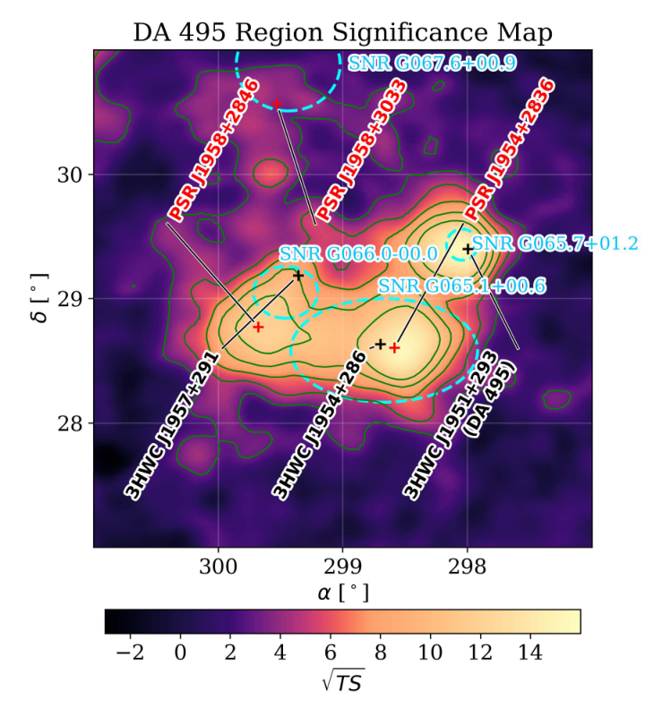
图注：DA 495区域的显著性图。绿色等高线表示3、5、7、9及11个标准差的显著性水平。黑色十字表示3HWC位置，红色十字表示脉冲星位置，青色轮廓表示射电观测识别的超新星遗迹。假定谱指数为2.4。
怎么看这张图：此图展示拟合前复杂天区，不能仅按等高线把每个亮斑解释为独立源。图2的模型和残差图在原HTML中只有图注、没有图像资源，故本页以此原图展示天空背景，源分解结论仍按正文及表1核对。 原HTML图2缺图像资源，改选可核验的实际天区图，不构造图像链接。
来源与置信度：arXiv HTML；source verified；https://arxiv.org/html/2610.13771v1/00_SignificanceMap.png
图5
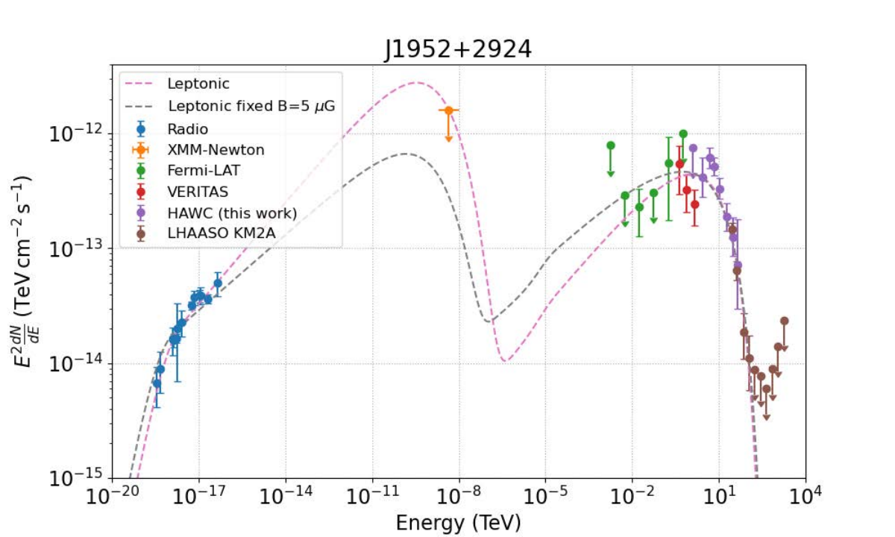
图注：在指数截止幂律轻子模型下，对J1952+2924的谱能量分布进行建模。粉色虚线表示允许全部自由参数变化的拟合，其最佳磁场约为 $B\sim10\,\mu{\rm G}$。灰色虚线表示将磁场固定为5微高斯的另一拟合。后者与射电及GeV数据的一致性较差，说明为何自由拟合得到更高磁场。
怎么看这张图：同时看低能同步辐射与高能逆康普顿区，不能只看TeV点附近。上限仍是约束而非探测，两个磁场示例不是完整系统误差扫描。 显示磁场由跨波段约束而非单个TeV点决定。
来源与置信度：arXiv HTML；source verified；https://arxiv.org/html/2610.13771v1/16_J1952_MWL.png
图8
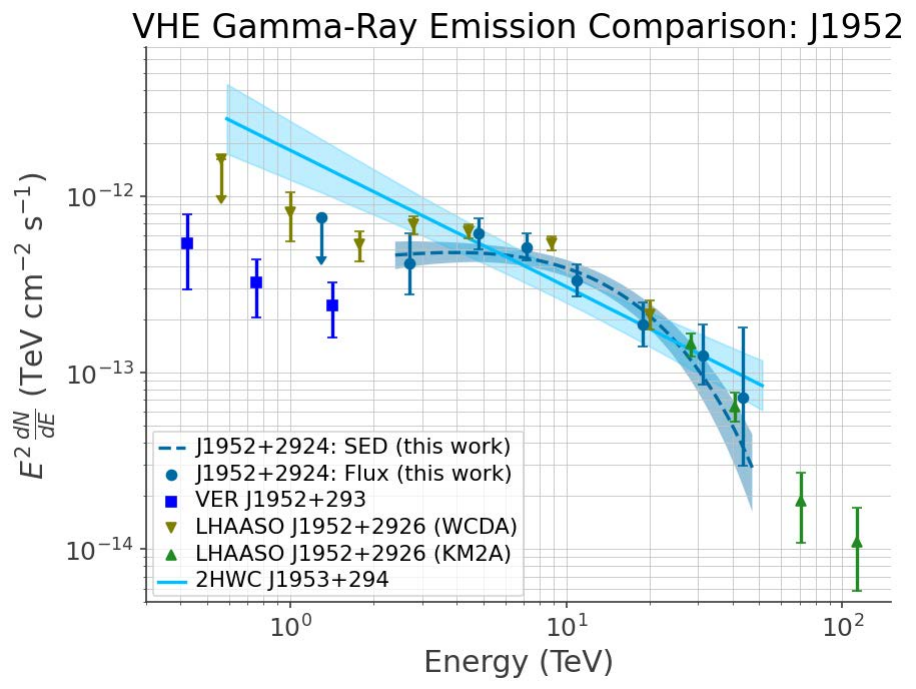
图注：J1952与VER J1952+293、LHAASO J1952+2926的能谱比较。VERITAS通量点取自Abeysekara等的参考文献6，LHAASO通量点取自LHAASO合作组的参考文献38；2HWC能谱按Abeysekara等的参考文献3重现。
怎么看这张图：比较新旧HAWC谱与其他仪器重叠能区。文中1 TeV数值比较使用HAWC拟合线向其约2.4 TeV有效下限之外的外推，应与直接测量区分。 核查旧通量差异与跨仪器解释。
来源与置信度：arXiv HTML；source verified；https://arxiv.org/html/2610.13771v1/13_J1952Comparison.png
强相关工作
同源的 Coerver 等2019年研究把 HAWC、VERITAS 与 NuSTAR 连在一起，是理解旧磁场及多波段约束的直接起点（doi:10.3847/1538-4357/ab21d0）。本文增加更长 HAWC 曝光、更新源分解与谱形，使旧通量差异有了具体分析解释。LHAASO 2026年 DA 495 研究（arXiv:2601.11071）提供更高能约束，但其中 X 射线分析与旧研究共用档案观测，不能把两套处理当成完全独立数据。
方法与观测关联可追到 VERITAS/Fermi 对2HWC源的研究（arXiv:1808.10423），它提供本文图8采用的切伦科夫望远镜谱点。Geminga、Monogem等晕研究则提供慢扩散的比较语境，不是 DA 495 参数的直接替代。共同问题是如何把粒子逃逸、磁场与辐射尺度分开；本文没有建立所有风云共用一套扩散常数的证据。
同一事件 / 同类源线索：
相似工作：
基础理论 / 方法工作：
相反观点 / 张力线索：
（未提供）
2. Perpendicular transport in isotropic magnetic turbulence. The role of stochastic drifts
- 来源：arXiv / astro-ph.HE
- 链接：https://arxiv.org/abs/2610.13865
- 作者：F. Pucci, P. Blasi, O. Pezzi, C. Evoli, F. Malara
- 公告 / 来源日期：2026-10-12
- 阅读层级：重点精读
- 评分：novelty 8/10，importance 8/10，relevance 9/10，final 9.35/10
- 推荐理由：随机漂移扩展非线性导引中心理论并解释垂直扩散标度转折，跨六至七数量级测试支持机制推进，需检验静态各向同性边界。
中文题目：随机梯度与曲率漂移如何增强宇宙线跨磁场扩散
做了什么：宇宙线通常沿平均磁场传播更快，垂直方向的扩散却不总是平行扩散的固定小比例。作者在静态、三维各向同性合成湍流中直接积分相对论试验粒子轨迹，发现回旋半径远小于磁场相关长度时，两方向扩散系数具有相近的能量标度；到中间尺度，垂直扩散随能量上升得更快。仅靠粒子沿弯曲磁力线运动的标准模型不足以解释这一段。
文章将磁场梯度和曲率导致的随机导引中心漂移加入统计输运理论，再比较无记忆扩散近似与保留有限传播时间的电报方程近似。后者与模拟更接近，特别是在较弱湍流中。这是对指定合成磁场与闭合假设的一次机制检验：平行扩散仍取自同一批模拟的拟合，部分归一化可调整，不能称为无自由参数地预测了真实星际介质中的全部输运。
为什么重要：银河宇宙线空间分布、源附近伽马辐射形态和到达方向各向异性都依赖扩散张量。若把垂直/平行比值在所有能量上固定，可能掩盖由磁场梯度引入的额外逃逸通道。本文的推进是把中间能段的偏离与一个有明确速度自相关来源的漂移项连接，并展示时间相关函数的选取足以改变理论与模拟的吻合程度。
理论 / 观测 / 仪器方法价值：可以借鉴的路线是先检验长时间均方位移是否进入稳定扩散，再独立测量磁力线游走，最后只增加有物理来源的速度项。这样能区分“场线本身更弯”与“粒子离开原来场线”两种机制。对模拟方法，作者还核对合成谱在大尺度端的形状，说明即使惯性区斜率相同，不同磁场生成器也可能产生不同高能输运归一化。
为什么应该关注：对 TeV 晕或其他延展伽马源建模，本文提醒我们把扩散各向异性和能量依赖分别检查，而非从一个角尺度直接推得普适慢扩散常数。真正应用还需要平均场方向、湍流强度、相关长度和辐射损失信息。将这里的静态、无间歇合成场推广到动态磁流体湍流，尤其有强场反转或自生波的源周围环境，是后续需要验证的条件，不是本文已经完成的观测解释。
展开详细解读：文章讲解、背景、理论、重点章节、图表与相关工作
文章详细讲解
科学问题：当粒子回旋半径逐渐接近湍流相关长度时，为什么它们横穿平均磁场的效率上升得比沿场传播更快？如果导引中心只紧贴一条游走磁力线，横向位移由场线形状与沿场行程共同决定。但有限回旋半径使粒子感受到磁场强度梯度与曲率，可能产生额外横向速度；需要判断这是否足够解释模拟，而非只为扩散系数另拟合一条曲线。
作者怎么做：用小波构造无散磁场，加上均匀导向场，对每组能量与湍流幅度积分4096条轨迹；随后从长时间均方位移和速度相关函数测量扩散。理论上以已有统一非线性输运模型描述标准场线项，加上梯度和曲率漂移贡献，并分别采用扩散与电报闭合来处理平行运动的时间记忆。两种闭合使用相同模拟参照，因而可直接比较哪个近似遗漏更多物理。
关键结果：在回旋半径与相关长度之比低于约0.01时，平行与垂直扩散均近似随能量的三分之一次方增加；约0.01到1之间，垂直方向相对更陡。高于相关长度后平行系数近似能量平方、垂直趋平，但本文漂移理论本身不适用于该高能区。电报闭合比纯扩散闭合更好地重现中间区增强，支持有限相关时间与随机漂移共同作用的解释。
局限和下一步：磁场静止、统计各向同性且不含间歇性，粒子不反作用于湍流，也未包含电场加速。理论还分解高阶相关、忽略部分交叉项，并以模拟拟合的平行系数作为输入。应继续用动态磁流体场、各向异性谱和独立数据检验机制；原文式44在当前HTML表达中存在时间量纲疑点，下面采用可由附录电报方程直接推出的教学形式，保留这一核查限制。
关键结果是怎么做出来的
第一步控制数值环境。作者选取湍流均方根幅度相对平均场的比值0.3、0.5和1，采用无间歇小波场、Kolmogorov惯性区斜率和宽谱区间。粒子用 Boris 方法推进，每个回旋周期约50步；正文数值设置给出的回旋半径/相关长度范围约2×10⁻⁴至20。摘要或引言范围概述不应替代实际方法段的参数。
第二步确认测到的是扩散而非过渡运动。图1的随时间系数先经历短时行为，再趋于平台，作者取后期统计量比较不同能量。若只在早期拟合位移增长，可以把沿场弹道、横向次扩散或数值未收敛误当成新的能量标度；因此长时间平台是后续模型比较的前提。
第三步检查仅靠场线游走能解释多少。作者独立追踪磁力线，估计其游走系数与粒子离开原场线的条件。复合扩散图像在部分参数下给出横向系数随时间减小的次扩散阶段，但在湍流幅度为1时并未出现足以解释所有结果的相应场线阶段，中间能量增强仍在。这削弱了单一场线去相关解释，却不等于否定所有场线输运理论。
第四步把漂移项转成可计算的谱积分。对回旋运动作平均，磁场梯度在傅里叶空间带来波数权重，回旋平均则引入零阶贝塞尔函数，抑制远小于回旋轨道的细结构。漂移速度的时间相关经 Taylor–Kubo 积分形成扩散贡献；关键的不确定性转移到粒子如何在相关时间内沿场传播，以及磁场与速度相关能否因子化。
第五步比较闭合和输入。纯扩散闭合在弱湍流中低估额外扩散；保留有限传播记忆的电报闭合改善了中间区匹配。平行系数来自同批模拟的三参数函数，标准项还有阶一归一化因子，因此这是受输入约束的模型验证，不是完全独立预测。作者同时指出低波数谱不同能解释与先前模拟的部分归一化差异，比较时不能只对齐惯性区斜率。
展开背景、理论、公式、模型和章节导读
背景知识
扩散张量描述大量粒子经过许多随机偏转后的统计传播。在存在平均磁场时，平行和垂直方向天然不同：粒子可以沿场快速前行，横向移动却需要场线弯曲、散射后换线或漂移。一个标量扩散系数往往是对更复杂几何与时间尺度的平均，不能从各向同性粒子注入直接推得各向同性传播。
回旋半径是粒子在局部磁场中绕转的尺度，相关长度是磁场方向或强度仍保留记忆的典型距离。两者之比决定粒子是紧贴局部磁力线，还是一次轨道就跨过许多磁结构。能量上升使回旋半径增加，因此即便湍流谱不变，粒子所感受到的有效结构也会变化。
场线随机游走并不等于粒子普通扩散。粒子若因俯仰角散射沿同一场线来回走，会重复经过已走过的横向位置，导致横向均方位移增长慢于时间。这种复合次扩散只有在粒子能够与原场线去相关后，才可能恢复长时间常系数扩散；去相关的来源正是理论争论的核心之一。
梯度漂移来自回旋轨道两侧磁场强度不同，曲率漂移来自沿弯曲磁力线运动的惯性效应。在随机场中，平均漂移可以接近零，但漂移速度的自相关积分仍为正，从而产生净扩散。本文利用的是随机运动的方差，不是在声称宇宙线整体朝同一横向方向流动。
基础理论 / 方法脉络
导引中心近似把快速回旋和慢尺度移动分开。当场结构相对回旋轨道足够平缓时，粒子位置可视为沿场运动加漂移；有限回旋尺度通过平均因子进入。这解释了理论为何在回旋半径接近或大于相关长度时失去控制，不能只因图上数值结果仍存在就延用同一解析展开。
扩散系数与速度记忆直接相关。若横向速度保持相关的时间较长，同样的瞬时速度幅度也会产生更大的长期位移；因此只知道磁场功率谱还不够，还必须指定粒子在相关时间内怎样采样空间。Taylor–Kubo 表达式把这一物理图像写成相关函数积分，是连接轨迹与统计理论的桥梁。
所谓闭合，是把不能直接求出的高阶相关用较低阶量近似。标准统一非线性输运理论将场线贡献与平行散射、横向去相关结合，但通常省略梯度/曲率漂移。本文把漂移相关加入，同时假定磁场、速度与传播概率的若干相关可以分离；若真实湍流具有强间歇结构，这些分离假设可能比谱斜率本身更重要。
纯扩散传播核等价于迅速丢失速度方向记忆；电报方程增加二阶时间导数，使短时传播速度有限、长时再回到扩散。两者不应被理解为两套不同的磁场观测，而是同一动力学的不同时间近似。弱湍流的散射时间较长，短时记忆更可能影响漂移积分，因而两种闭合差异在那里更明显。
公式与推导
下面保留原文所用的统计链，先从轨迹定义出发，再说明电报闭合为什么改变漂移积分；简化式均标注条件，不用公式数量代替推理。
定义湍流强度与尺度比：
$B_0$ 是平均导向场，$L_c$ 为相关长度，$r_L$ 为论文采用的回旋半径；对相同电荷和磁场的超相对论粒子，$y$ 随能量近似线性增加。此定义使不同物理单位的模拟可在无量纲坐标比较。
粒子轨迹直接给出长期系数，本文每个垂直分量采用
$v$ 是速度，$\lambda_i$ 为相应平均自由程。两个垂直分量相等时，总横向均方位移要除以 $4t$；不能把两种定义混用而差一个因子2。有限时“运行系数”还可用均方位移的半时间导数检验平台。
对平稳、均值已扣除的速度过程，教学展开位移的双时间积分可得
这就是 Taylor–Kubo 关系，量纲为速度平方乘时间。将横向速度拆成沿曲折场线贡献与随机漂移，再忽略其交叉相关，才可近似将两种扩散贡献相加；这种忽略是闭合条件，不是恒等式。
回旋平均使波数为 $k_\perp$ 的结构受到 $J_0(k_\perp\rho)$ 调制，其中 $J_0$ 为零阶贝塞尔函数，$\rho=\sqrt{2/3}\,r_L$ 是本文各向同性俯仰角近似的尺度。原文漂移项为
$P(k)$ 为其无散、各向同性磁谱，归一化随谱张量定义；$G$ 为传播记忆的时间积分。梯度带来的 $k^2$ 与回旋平均抑制共同决定哪些尺度最有效，不能只保留前面的 $\rho^2$ 就宣称能量平方律。
在纯扩散闭合中，空间传播的傅里叶因子指数衰减，因而
分母是逆时间，故 $G$ 是时间。这种写法将平行运动从最初就视为扩散，可能遗漏短时速度记忆。
原文附录采用的平行电报方程可写为
$T$ 是平行传播核，$\tau$ 是方向记忆时间；长时可忽略二阶导数，恢复扩散系数 $v^2\tau/3$。这说明电报与扩散模型在适当极限下必须衔接。
令 $A=D_\perp k_\perp^2$，对上式作拉普拉斯变换并在变换变量 $s=A$ 处取值，得到教学核查式
分母各项均为逆时间。当前HTML原文式44最后一项写成 $v^2k_\parallel^2/3$ 而未显示所需的 $\tau$，与其附录方程的变换及量纲不一致；这里明确采用附录推导形式，不声称已检查作者数值代码或据此推翻图7结果。使用该模型复现时应向作者核对这一处。
完整模型的求解仍是自洽问题：
右侧自身包含未知的横向去相关速率，作者迭代求解。$D_\parallel$ 不是由这条方程预测，而由同批轨迹拟合输入；标准项还有阶一几何因子，必须在验证中声明。
该输入拟合按附录B写为
$D_0$ 决定归一化，$R_b$ 为无量纲转折尺度，$s$ 控制过渡宽度。低 $y$ 时括号趋1，得到三分之一次幂；高 $y$ 时括号贡献 $y^{5/3}$，与前面的 $y^{1/3}$ 合并后为 $y^2$。这一代数极限说明拟合为何连起两个能段，但它并不使漂移理论在高 $y$ 处自动有效。
模型拟合 / 应用方法
本文主要是在模拟与解析近似之间做标定，没有天文光子数据的似然拟合。输入是无散合成磁场、粒子能量、初始方向及湍流幅度，输出是轨迹系数与磁力线统计。应先检查积分步长、总传播时长和平台，再比较理论；轨迹数4096提供统计平均，但并不自动等于4096个完全独立磁场实现。
平行扩散用跨越共振与高能区的三参数式拟合。三种湍流幅度的归一化约50.2、16.3、3.92，转折尺度约1.9，过渡宽度也随幅度改变。这些是对本组磁场生成方式的标定，不可不经单位、相关长度及大尺度谱转换就移植到其他模拟。
标准横向项选用统一非线性输运模型，而非把所有场线理论混为一条曲线；图7采用约0.44—0.63的阶一调整因子，而旧文常见1/3。将其固定后加入漂移可以观察模型改善发生在哪个能段，但归一化的可调性使该比较不能被描述为完全参数自由的严格预言。
漂移闭合测试的重点是低与中能区的形状。纯扩散核低估较弱湍流的增强，电报核改善匹配；并未报告一个可直接用于统计发现声明的全模型贝叶斯因子。不同闭合导出的中间区渐近幂律也有不同湍流幅度依赖，应视为特定谱与近似下的标度，而不是所有宇宙线都必须遵守的新定律。
大尺度磁谱是重要系统项。合成场在低波数端并不严格复制理想各向同性均匀湍流的渐近形状，这会改变高能粒子采样的有效结构。作者为展示谱使用较短谱区间避免混叠，实际粒子计算采用更宽范围；示意谱图的网格大小不能误作全轨迹计算的唯一分辨率。真正的应用验证应再改变场生成器、动态演化和间歇参数，检查机制而非只重现一条拟合线。
重点章节 / 结果段落怎么读
第2—3节：先确定磁场生成规则、回旋半径与相关长度定义，再用图1判断后期是否形成平台；图2才是能量依赖的主要比较。
第4节：独立看场线统计和去相关尺度，理解为什么“沿同一随机场线往返”可能次扩散，以及这一解释在哪里不充分。
第5.1节：追踪标准项如何从速度相关得到，明确统一非线性输运近似与可调几何因子，不把它当作无条件的基准真理。
第5.2节及附录A：检查梯度/曲率漂移的谱积分与电报传播核。式44和附录方程之间的量纲疑点需在复现前澄清。
第6—7节与附录B：将图6、图7和模拟输入拟合一起看，划清拟合输入、预测输出及高回旋半径区失效范围。
关键图表与解读
图2
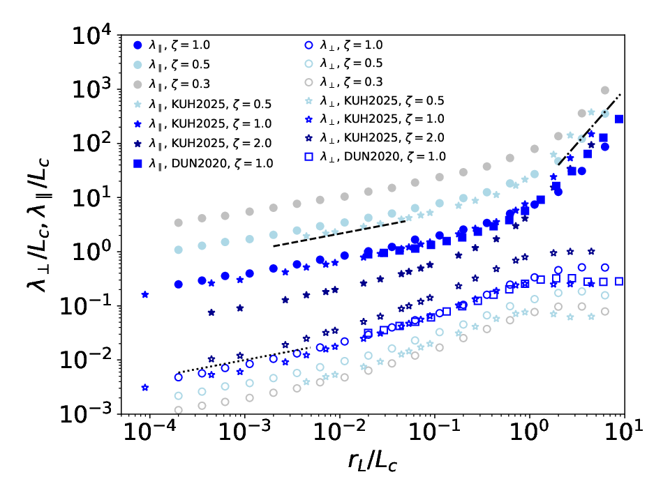
图注：平行和垂直平均自由程随粒子能量的变化。不同颜色表示不同湍流强度：$\zeta=0.3$为银色，0.5为浅蓝色，1.0为蓝色，2.0为深蓝色。不同符号表示本文（圆点）、Kuhlen等2025a年工作（KUH2025，星形）及Dundovic等2020年工作（DUN2020，方形）。虚线和点线给出 $(r_L/L_c)^{1/3}$ 的参考标度，点划线给出高能区 $(r_L/L_c)^2$ 的参考标度。
怎么看这张图：先看两方向曲线在中间尺度的相对斜率，再比较不同研究；深蓝色包含既有工作，不能把图中全部参数都归为本文新模拟。不同大尺度磁谱会改变归一化。 展示需解释的能量依赖与外部模拟比较。
来源与置信度：arXiv HTML；source verified；https://arxiv.org/html/2610.13865v1/figure2.png
图7
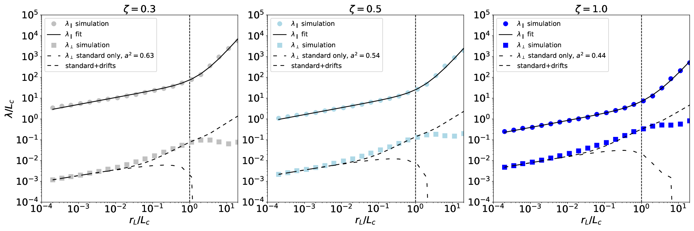
图注：模拟得到的平行与垂直平均自由程分别以圆点和方形表示；平行平均自由程的拟合为实线，标准磁力线扩散给出的垂直平均自由程为稀疏虚线，标准扩散加漂移的结果为虚线。这里采用电报方程闭合。三列对应 $\zeta=0.3,0.5,1.0$。
怎么看这张图：检查加入漂移后虚线在中间能段能否跟随方形，而不是把实线对圆点的拟合也算独立预测。公式核查中已注明原文式44与附录传播核的量纲疑点。 显示有限时间记忆加漂移的模型验证。
来源与置信度：arXiv HTML；source verified；https://arxiv.org/html/2610.13865v1/figure7.png
强相关工作
Kuhlen、Mertsch与Phan的两篇相关工作分别提供各向同性湍流中的轨迹模拟和解析模型（arXiv:2211.05881、2211.05882），是本文直接比较的对象。新论文同样看到横向/平行比值在中间尺度变化，但把额外横向运动归入随机梯度与曲率漂移，并强调大尺度谱差异会影响不同生成器之间的归一化；因此结果不是对既有模拟的简单重复。
理论基础是 Matthaeus 等2003年的非线性横向扩散与 Shalchi 2010年的统一输运框架，二者在本文参考文献和第5节中明确讨论。电报方程文献则解释从短时有限传播到长时扩散的过渡。这里的争论集中在闭合、去相关及漂移遗漏，而非某一观测直接排除了全部场线机制；基础与相关链接均按已核验的参考文献或本文章节给出。
同一事件 / 同类源线索：
相似工作：
基础理论 / 方法工作：
相反观点 / 张力线索：
（未提供）
3. Extreme mass ratio inspirals from the Hills mechanism, The eccentricity distribution of Hills EMRIs in LISA
- 来源：arXiv / astro-ph.HE
- 链接：https://arxiv.org/abs/2610.13294
- 作者：Biancamaria Sersante, Davide Mancieri, Kevin Leopoldo Muñoz Zavala, Luca Broggi, Zephyr Penoyre, Elena Maria Rossi, Alberto Sesana
- 公告 / 来源日期：2026-10-12
- 阅读层级：重点精读
- 评分：novelty 8/10，importance 8/10，relevance 8/10，final 9.00/10
- 推荐理由：Hills通道贯通核星团供给、三体俘获和相对论演化，提供有条件可区分的LISA偏心率预言；率与二元星比例敏感。
中文题目：Hills 潮汐拆散双黑洞后的 EMRI：偏心率、形成效率与通道先验
做了什么：极端质量比旋近（EMRI）由恒星级致密天体绕大质量黑洞逐渐辐射引力波形成。Hills 机制先把一个双黑洞潮汐拆开，一颗逃逸、一颗被俘获；常见直觉是这种俘获会留下几乎圆形的空间引力波源。作者以银河系中心量级的非自旋黑洞与核星团为例，串联星团弛豫、近心三体相遇、俘获后随机散射与引力波主导演化，直接计算这一通道的分布。
在固定双黑洞质量与内部半长轴的模型中，93组实现共372万个初始双黑洞，约1.04%进入潮汐半径，拆散后被俘获者中约59%最终形成 EMRI，但相对所有初始双星的比例仅0.39%。Hills 源在作者定义的 LISA 入口截面平均偏心率约0.098，坠入前约0.035，虽比经典散射通道低，却远非全部圆轨道。两种分布重叠，识别通道还强烈依赖星团中双黑洞占比，本文没有计算实际 LISA 探测选择函数。
为什么重要：偏心率是从引力波反推致密天体形成环境的重要线索，但“更圆”不是单源起源的充分条件。这项工作把初始供给、潮汐俘获和后续再散射放进同一统计链，使过去较理想化的圆化判断获得更具体的分布与效率边界。它既显示 Hills 俘获者容易成功旋近，也说明双星进入潮汐区本身稀少，因此局部成功率高不代表它主导所有 EMRI。
理论 / 观测 / 仪器方法价值：方法价值是分阶段连接不同尺度的动力学：Fokker–Planck 方程处理核星团大量弱散射，三体积分处理短暂而强的潮汐交换，蒙特卡洛继续跟踪俘获轨道，最后用相对论通量演化进入强场。每个阶段保留进入与退出条件，能追踪最终统计来自哪一层筛选。对其他形成通道，尤其要区分输入种群权重、真实物理结局和为了计算效率设置的停止条件。
为什么应该关注：该工作与准周期 X 射线喷发（QPE）及未来空间引力波研究有实质联系：若喷发周期映射到绕黑洞轨道，可比较周期—偏心率分布。但当前 QPE 起源仍多解，周期还可能是一圈一次或两次穿盘的结果，不能把某个源落在模拟区域就称为 Hills 发现。更值得关注的是不同黑洞质量、自旋、双星内部尺度和核星团历史如何改变可观测分布。
展开详细解读：文章讲解、背景、理论、重点章节、图表与相关工作
文章详细讲解
科学问题：潮汐拆散产生的俘获黑洞，到进入空间引力波频段时还有多大偏心率，能否与单黑洞经星团散射形成的经典通道区分？俘获瞬间的轨道往往高度偏心，但半长轴已大幅缩小，可能有足够时间在引力波损失下圆化；同时背景恒星仍会继续扰动角动量，因此只计算一次拆散不能回答最终问题。
作者怎么做：固定中心黑洞质量为400万太阳质量、无自旋，核星团含8000万颗太阳质量恒星，每组初始有4万个双黑洞，其两个成员各10太阳质量、内部半长轴0.1 AU。先用二维分布函数追踪10 Gyr弛豫供给，再对越过潮汐半径的双星进行限制性牛顿三体积分，随后把俘获者放回带随机散射和引力波损失的演化中。真正进入引力波主导区后，再接入更适合相对论轨道的通量演化。
关键结果：多数入射来自空损失锥，意味着每次散射只能把少量轨道缓慢送过破坏边界；83.3%的样本属于这一类型，穿透深度中位数约1.22。24592颗俘获黑洞中14517成为 EMRI，480直接坠入，其他属于计算定义的缓慢演化类。Hills 分布通常较圆，但在 LISA 入口偏心率低于0.01的仅约0.09%，不能把“相对更圆”写成“近乎全都圆”。
局限和下一步：结论来自单一中心质量、自旋和双星内部参数，不是宇宙总体预测。经典比较样本还采用过更严格的缓慢演化剔除条件，在低偏心处制造截断；这部分形状不能全归于真实通道差异。应在统一停止条件下扩大参数网格，并加入探测概率与偏心率测量误差，再评估观测到一例低偏心 EMRI 后能更新多少形成通道概率。
关键结果是怎么做出来的
第一层是核星团供给。二维能量—角动量 Fokker–Planck 网格为200乘200，演化同时包含多质量组分的散射和损失边界。93个统计实现产生372万个初始双星，其中38550越过潮汐半径。这里1.04%的分母是全部初始双星，表征“有没有机会被拆散”，不是拆散发生后的成功率。
第二层是一次近心相遇。作者用当时的质心轨道、内部相位和方向作为三体计算初态，约64%发生拆散，形成24592个俘获者。大部分质心轨道接近抛物线，能量交换因此把一颗送入更紧束缚轨道、另一颗带走正能量。双星相对轨道的取向影响交换量，故捕获的半长轴和偏心率具有分布，不能只用一个典型值替代。
第三层跟踪俘获后的竞争。随机散射可以把黑洞再次推向危险的低角动量，也可能让它缓慢停留；引力波则持续带走能量与角动量。作者要求引力波时间小于弛豫时间的千分之一才进入最后的确定性阶段，并以约100 Myr的组合时间阈值标记缓慢演化。后者是计算分类，不能等同于它们永远无法形成 EMRI。
第四层进入强场。高偏心阶段采用适当的近似通量，再接入 FastEMRIWaveforms 中的相对论轨道通量，直到非自旋分离曲线。图7给出的 Hills 与经典分布，在入口平均偏心率约0.0975对0.478，坠入时约0.0346对0.2282；比较必须在相同轨道截面进行，不能拿不同演化阶段的数值直接判断哪种机制更圆。
第五层才是总体通道概率。相同初始致密质量预算下，10 Gyr产生约156个 Hills EMRI而经典通道约1344个；前者折算约1.6×10⁻⁸每银河每年，仅是本模型时间平均率。加入双星质量占比后，即使在偏心率较低区，若该占比仅0.1，坠入时 Hills 概率仍不足20%；若0.01则不足5%。这些是限定两通道、未施加观测选择的混合比例，不是现实某源的最终后验。
展开背景、理论、公式、模型和章节导读
背景知识
EMRI 的两端质量相差极大：恒星级黑洞以许多圈轨道逐渐靠近百万太阳质量中心黑洞，长期波形记录强引力场结构。它不同于两颗相近质量黑洞的一次快速并合，形成过程和轨道偏心率可能在长时间演化后仍留下环境信息；但需要先知道测量对应哪一时刻。
核星团中的恒星不断相互引力散射，这种累积弱相遇称为弛豫。能量决定轨道大致尺寸，角动量决定近心能靠多近。损失锥是角动量足够低、会遭潮汐破坏或直接坠入的轨道集合；空损失锥并非里面完全没有天体，而是进入者被移除快于散射补给。
Hills 机制利用双星内部束缚能与绕大黑洞轨道能之间的交换。潮汐拆散后，一颗成员获得能量逃逸，另一颗留下更负的轨道能；被俘获者因此可从更小的半长轴开始损失引力波能量。相比从远处单次散射到极低角动量的经典路径，它通常有更多圆化空间，但初始仍可非常偏心。
QPE 是某些星系核中重复出现的软 X 射线喷发。部分模型将其与小天体穿越吸积盘联系起来，但还有其他机制，且光变周期与轨道周期之间并非天然一一对应。本文拿周期—偏心率分布作相容性比较，是连接动力学与暂现现象的一步，尚不是凭光变确认隐藏双星历史。
基础理论 / 方法脉络
潮汐半径来自中心黑洞在双星尺度上的差分引力与内部束缚引力比较。这个尺度既依赖双星内部半长轴，也依赖中心/双星质量比，因此固定0.1 AU实际上选定了一类硬双星。更宽或更紧的双星会在不同位置被拆开，俘获后轨道和后续圆化时间也随之变化。
能量交换的典型尺度来自双星内部速度与近心质心速度的交叉项。被俘获成员拥有负的比轨道能，半长轴随其绝对值增大而变小；角动量则连接近心距离与偏心率。标准标度给出直观数量级，具体轨道仍需三体积分处理相位、取向及有限穿透深度。
引力波导致轨道收缩与圆化，但高度偏心时辐射集中在近心附近。早期演化常近似保持近心距离，再逐渐降低偏心率；强场时牛顿轨道和低阶通量会失准。因此作者把统计弛豫和后期相对论演化分段处理，并用重叠适用区连接，不能把 Peters 公式一直外推到最终坠入。
通道鉴别是混合种群推断。某个偏心率区内 Hills 源比例，不只取决于两条概率密度曲线，还取决于两通道本来的数量和被探测机会。即使一个低偏心值在 Hills 模型中很常见，只要实际双星很稀少，它仍可能更大概率来自经典通道；这正是基准率不能被忽略的原因。
公式与推导
以下将潮汐俘获、圆化和通道概率顺次连接。前半为正文使用的数量级关系与标准轨道教学式；进入强场后必须采用作者实际的相对论通量，不能将教学近似冒充最终求解器。
设中心黑洞质量 $M$、双星总质量 $m_b$、内部半长轴 $a_b$，比较差分引力与内部引力得
这里 $G$ 为引力常数。对本文 $M=4\times10^6M_\odot$、$m_b=20M_\odot$、$a_b=0.1$ AU，$Q=2\times10^5$，得到 $r_t\simeq5.85$ AU。内部双星尺度与俘获后的绕中心轨道尺度必须分开记号。
接近抛物线的质心运动与内部速度相乘，给出交换比能量的教学标度
等号前的数量级系数取决于相位、取向和成员质量；因此这里不把一个近似中心值冒充每次相遇的精确答案。本文典型俘获半长轴约 $1.66\times10^{-3}$ pc，远大于原内部0.1 AU，却远小于大多数入射质心轨道。
若定义穿透参数 $\beta=r_t/r_p$，将近心距离 $r_p=a(1-e)$ 接入可得
$e$ 为绕中心轨道偏心率。本文 $Q^{-1/3}\simeq0.0171$，故典型俘获初态仍非常偏心；最终相对较圆，是后续演化的结果而非拆散瞬间就是圆轨道。
在牛顿束缚轨道中，比能量 $\varepsilon$ 和比角动量 $J$ 满足
$p$ 是半通径。这些式子说明散射为何可分别改变轨道大小与近心；接近黑洞时，相对论能量—角动量映射必须取代牛顿关系。正文不同阶段使用的“坠入边界”不应无条件混写。
作者用竞争时间划分后续结局：
$D_{JJ}$ 表示角动量方差增长率，单位为 $J^2$/时间；这里以熟悉记号替代原文扩散系数标记。最后的不等式是为安全进入引力波主导演化选取的阈值，不是自然界固定存在的分界常数。
在弱场、轨道平均且质量比很小时，Peters 辐射损失给出教学式
$m$ 是被俘获单颗黑洞质量，$c$ 为光速。两个负号分别表示收缩和圆化，强烈的 $(1-e^2)$ 因子说明高偏心近心辐射的重要性；它们不包含星团随机散射或强场全部修正。
消去时间并积分得到正文讨论使用的轨道族：
$C$ 由初始轨道确定，量纲为长度。高偏心时 $a(1-e)$ 近似不变；低偏心时 $a\propto e^{12/19}$，因此继续收缩会逐渐降低偏心率。这解释“较早俘获为何更能圆化”，但真实分布还叠加捕获初态与再散射。
最终强场阶段，非自旋黑洞的稳定束缚轨道分离曲线为
此处 $p,e$ 应理解为相对论轨道参数。接近该曲线时作者使用数值相对论通量的近似/插值演化，而非一直套用上一组弱场式；这一步决定所报“坠入时偏心率”的取样位置。
最后把分布转成限定两通道的概率。设双星致密质量占比为 $\mu$、单位相应质量的形成效率为 $Y_H,Y_C$，偏心率概率密度为 $f_H,f_C$，则教学混合式为
这说明仅有 $f_H$ 的峰值不够；还需相对产额和基准率。实际探测样本还必须在各通道中加入选择函数与测量似然，本文图中的理论比例没有完成这一步。
统计误差也应尊重权重。附录采用加权计数的泊松近似
$w_i$ 是样本权重，不能直接把 $\sqrt H$ 当所有加权直方图的误差。该误差仅描述有限模拟计数，未包含中心质量、双星分布和停止条件等模型系统项。
模型拟合 / 应用方法
这不是对某个观测 EMRI 的参数估计，而是固定星团模型下的合成种群计算。中心黑洞质量400万太阳质量、无自旋；恒星和双黑洞初态、0.1 AU内部尺度及10 Gyr演化时间均是输入。若把这些固定条件省掉，0.39%的总产额就会被误读成所有星系通用形成效率。
第一阶段的200乘200网格和自适应时间推进用来解分布函数，限制每步变化控制数值稳定。随后93个实现抽样强相遇与后续扰动，形成统计误差。网格收敛、随机抽样误差和天体种群不确定性是不同层次；本文给出大量样本，不等于已经扫描全部核星团模型。
进入损失锥时，三体计算采用牛顿限制性近似，后续判据又依能量和角动量决定直接坠入或继续演化。引力波时间与弛豫时间比的千分之一阈值较保守，可减少最后阶段受外扰的影响。缓慢演化分类采用有限停止条件，因此其计数表示本次计算没有继续跟踪的部分，不能直接给出宇宙时间内永不形成事件的比例。
最终波形轨道阶段，高偏心近似与低偏心相对论通量在可用范围内切换。作者所称“LISA入口”是一个固定轨道截面，不是实际信噪比超过阈值的探测时刻；因此平均入口偏心率只能在该定义下引用。若将其映射成具体频率，应重新核对轨道参数和谐波定义，不能忽略偏心源辐射分布在多个谐波。
与经典通道比较时，最重要的诊断是图7低偏心端的人工截断：旧比较样本使用更严格的缓慢演化剔除，作者也明确承认它可造成边缘差异。通道权重图中的有限样本误差没有吸收这类系统差异；需要统一初态质量预算、停止规则、中心黑洞参数和探测选择，才能把理论比较推进为观测形成通道推断。
重点章节 / 结果段落怎么读
第2节与图1：逐层写清初始双星、越过潮汐半径、成功拆散、被俘获以及最终EMRI的分母；59%与0.39%回答不同问题。
第2节三体相遇部分与图2—4：检查穿透参数、质心偏心率和内部取向怎样影响能量交换，再理解典型捕获半长轴为何只是一种标度。
第2.3节：重点看引力波/弛豫时间判据、缓慢演化停止条件和直接坠入边界，它们直接决定哪些轨道进入最终分布。
第3节与图7：在入口和坠入两个截面分别比较 Hills 与经典通道，保留作者指出的经典低偏心截断问题。
第4节及附录A：区分未加权产额、双星质量比例重加权、有限计数误差与QPE相容性；不要把最后一步升级成现实源的通道确证。
关键图表与解读
图1
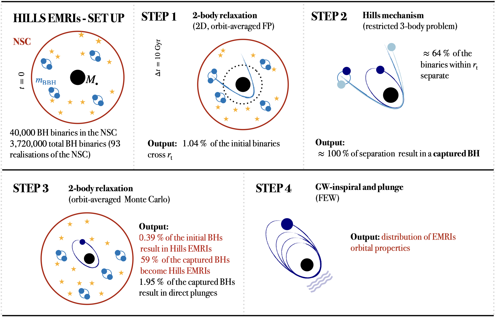
图注：Hills EMRI分析步骤示意图。第1步结束时，双星要么继续留在核星团，要么越过潮汐半径；越界比例为38550/3720000，即1.04%。越界双星中64%被拆散，约36%存活。拆散后一个成员被大质量黑洞束缚，另一个逃逸；束缚成员可成为EMRI、缓慢演化系统（SE）或直接坠入系统（DP）。相对初始种群的EMRI总比例为0.39%（见第3节），相对被俘获黑洞的EMRI比例为59%。EMRI随后由引力波驱动演化直至坠入，其最终性质由第4步给出。
怎么看这张图：沿流程同时记录每个百分比的分母。局部59%的成功率和整体0.39%的产额并不矛盾；SE是计算停止分类，不能读成永远不会发生旋近。 防止分母混淆，给出多阶段证据链。
来源与置信度：arXiv HTML；source verified；https://arxiv.org/html/2610.13294v1/Final_sketch.png
图7
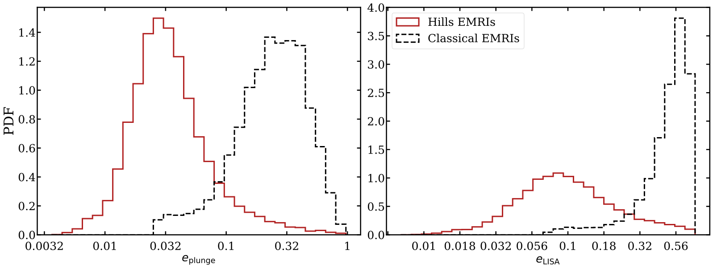
图注：左图为EMRI在坠入时的偏心率概率密度分布；右图为进入作者所定义LISA频段阈值时的偏心率分布。两图均以红色实线表示Hills通道，并与Mancieri等2026年的经典EMRI分布（黑色虚线）比较。经典分布在坠入偏心率 $e=0.026$ 处的陡截断，很可能来自Mancieri等2025年剔除了被散射到 $(1-e,a)$ 平面缓慢演化区的较圆系统；该工作定义这一区域所用条件比本文更严格。
怎么看这张图：分别在同一面板比较两通道，不能把入口与坠入混为同一观测时刻。分布重叠且经典端点含选择影响；红线更偏向低偏心不等于单源归属概率更高。 偏心率结论及原作者承认的选择边界。
来源与置信度：arXiv HTML；source verified；https://arxiv.org/html/2610.13294v1/dN_log_plungeLisa_allreals.svg
强相关工作
Hills 1988年工作（doi:10.1038/331687a0）提供潮汐拆散与超高速逃逸的基本机制，Miller 等2005年研究（doi:10.1086/497335）把双星拆散与低偏心EMRI联系起来。本文增加从星团供给到最终旋近的统计跟踪，说明“比经典通道更圆”仍成立，但“通常已几乎完全圆化”的简单预期需要以实际分布、参数与取样阶段来修正。
Peters 1964年（doi:10.1103/PhysRev.136.B1224）给出弱场圆化的基础轨道关系，Fujita与Shibata 2020年（doi:10.1103/PhysRevD.102.064005）则关联后期强场通量计算。经典通道比较采用 Mancieri 等近期种群，其停止条件与本工作并不完全一样；因此图7分布差异同时含有形成历史和计算筛选的影响。以上是已核验参考文献中的方法关系，不声称今天重新阅读全文了所有历史工作。
同一事件 / 同类源线索：
相似工作：
基础理论 / 方法工作：
- https://doi.org/10.1038/331687a0
- https://doi.org/10.1103/PhysRev.136.B1224
- https://doi.org/10.1103/PhysRevD.102.064005
相反观点 / 张力线索：
（未提供）
相关简报
1. Flux Evolution of PSR B0540--69 and the Spectral Energy Distribution of its Pulsar Wind Nebula
- 来源：arXiv / astro-ph.HE
- 链接：https://arxiv.org/abs/2610.13182
- 作者：Juan Zhang, Xuezhi Liu, Junyang Zhang, Hanlong Peng, Mingyu Ge, Songzhan Chen, Shanshan Weng, Shijie Zheng
- 公告 / 来源日期：2026-10-12
- 阅读层级：相关简报
- 评分：novelty 7/10，importance 8/10，relevance 10/10，final 9.40/10
- 推荐理由：跨两十年区分脉冲与星云亮化，限制自转突变后的能量传输；新时间基线有用，SED机制仍需完整核验。
中文题目：B0540–69 星云的 X 射线增亮延续十四年：稳定 GeV 辐射限制能量再分配
问题、方法与结论：大麦哲伦云脉冲星 B0540–69 在2011年自转减速率突变后，额外损失的转动能去了哪里？作者把 EP/FXT、Swift、NICER 与历史观测接成2000—2026年 X 射线光变，并用2008—2025年 Fermi-LAT 数据分离脉冲与非脉冲成分。1—10 keV 总光度从约1.16升至1.38×10³⁷ erg/s，高态维持超过14年；脉冲光度基本不变，支持增亮主要来自风云。扣除脉冲后，星云增幅约26%。GeV 数据未给出相应长期跃迁的显著证据。
意义与贡献：新贡献是把已知星云响应延长到十余年，并同时约束中心脉冲辐射和 GeV 输出。旋转能重新分配足以供应这次持续增亮，不必直接套用磁星暴发供能；但现有数据尚不能在粒子注入增强与磁能增加之间唯一选择。
可借鉴之处：可借鉴相位分辨光谱与跨仪器光变的联合检查：LAT 长时间数据固定谱形，分时段拟合归一化，并保留脉冲/非脉冲协方差。非脉冲通量前后比为0.922±0.116；剔除已知短时耀发后变化不足0.5个标准差，有助于区分持续响应和少数异常时段。
局限与关注点：两区辐射模型给出内区电子截止能约3.56 PeV，但内区磁场1.01 mG和空间尺度被固定；磁场估计还假设268±91天响应主要由同步冷却决定。该截止能是模型条件下的推断，不是 PeV 光子探测。离脉冲区可能残留磁层辐射，H.E.S.S.目前仅有上限；需要空间分辨谱、相位分辨 GeV 数据及更深 TeV 观测检验。
图2
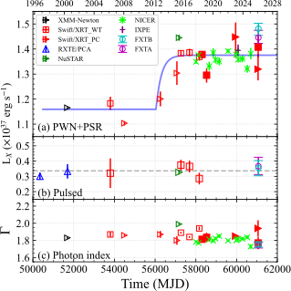
图注：B0540–69的X射线光度与光子指数演化。FXTA和FXTB分别为洋红色、青色空心圆；本文分析的其他仪器包括NICER（绿色叉号）、Swift/XRT光子计数模式（实心三角）和窗口计时模式（实心方形）。2018年前的空心符号取自Ge等参考文献15的表1、表2。（a）脉冲星加星云系统的1—10 keV总光度，蓝线为式2的最佳拟合。（b）脉冲光度，水平虚线表示其均值。（c）脉冲星加星云系统的光子指数。
怎么看这张图：把上、中面板对照：长期总光度高态没有对应的脉冲光度增亮，因此主要指向星云。跨仪器点的散布不应全部解释成本征变化。 直接支持十四年持续星云响应。
来源与置信度：arXiv HTML；source verified；https://arxiv.org/html/2610.13182v1/luminosity.svg
2. In-flight Timing Calibration of the Follow-up X-Ray Telescope on Board the Einstein Probe
- 来源：arXiv / astro-ph.HE
- 链接：https://arxiv.org/abs/2610.12943
- 作者：Juan Zhang, Xiaofan Zhao, Dawei Han, Hao Wang, Yong Chen, Mingyu Ge, Shijie Zheng, Shumei Jia
- 公告 / 来源日期：2026-10-12
- 阅读层级：相关简报
- 评分：novelty 7/10，importance 8/10，relevance 10/10，final 9.40/10
- 推荐理由：EP/FXT多模式在轨时间标定与NICER/射电脉冲星交叉比对，可直接约束时域测量系统误差；微秒绝对精度属初步估计。
中文题目：爱因斯坦探针 FXT 在轨计时：用五颗脉冲星区分时间分辨率与绝对准确度
问题、方法与结论：作者用五颗周期从11秒到1.56毫秒的脉冲星，检验 EP/FXT 的全帧、部分窗口和计时三种模式。处理链把星载时钟与卫星导航秒脉冲对齐，修正读出时序，再将到达时刻转换到太阳系质心，与参考星历及 NICER 模板比较。三种模式的标称时间分辨率分别约50毫秒、2.2毫秒和23.68微秒；这些数值描述采样间隔，不能直接当作绝对计时误差。
意义与贡献：毫秒脉冲星提供比 Crab 更干净的微秒级校准参照，因为 Crab 的 X 射线脉冲相对射电脉冲本就存在数百微秒物理提前。本文在轨结果支持 FXT 开展快速脉冲研究，同时说明不同模式与不同标准源给出的时钟约束强度不同。
可借鉴之处：可复用的是完整误差链：读出行时间、复位延迟、质心校正、星历、能段匹配与模板相位逐项处理。计时模式两模块相对延迟20±19（统计）±21（系统）微秒，与零一致；比较同一脉冲星的两个模块，可减少源本身相位偏移对相对校准的干扰。
局限与关注点：文中基于仅两颗毫秒脉冲星得到约6和31微秒的初步绝对准确度估计，不能解释为所有观测的单光子误差或完整时钟误差预算。各到达时刻误差的平均值也不是均值标准误；弱源模板误差、星历有效期及位置误差仍需单独传播。后续跨能段相位或相干搜索应采用相应模式的校准条件。
图3
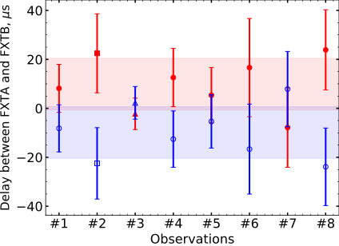
图注：计时模式下FXTA（红色实心符号）与FXTB（蓝色空心符号）之间的系统延迟。数据分别来自Crab脉冲星（圆点）、PSR B1821–24（方形）和PSR B1937+21（三角形）；每次观测中两个模块残差的均值被归一到零。红色、蓝色阴影分别表示FXTA、FXTB平均相对延迟的系统不确定性范围。
怎么看这张图：这是两个模块的相对一致性检验，归零会消去共同偏移；它不能单独证明整个仪器相对外部时标没有绝对延迟。 区分相对延迟和绝对准确度。
来源与置信度：arXiv HTML；source verified；https://arxiv.org/html/2610.12943v1/ABdelay.svg
3. Simulation Study of Reconstruction of Cosmic Ray Extensive Air Shower with Thermal Neutron Detected by ENDA
- 来源：arXiv / astro-ph.HE
- 链接：https://arxiv.org/abs/2610.13183
- 作者：Fan-Ping Li, Xin-Hua Ma, Hu Liu, Tian-Lu Chen, Shu-Wang Cui, Danzengluobu, Xin-Rui Gao, Wei Gao
- 公告 / 来源日期：2026-10-12
- 阅读层级：相关简报
- 评分：novelty 7/10，importance 7/10，relevance 10/10，final 9.05/10
- 推荐理由：ENDA热中子横向分布及强子能量代理与地面阵列直接相关；为MC响应研究而非已实现成分测量。
中文题目：ENDA 模拟以热中子侧向分布重建簇射强子成分
问题、方法与结论：宇宙线空气簇射中的强子撞击地面材料后产生蒸发中子，热化后可被 ENDA 探测。作者用 CORSIKA 与 Geant4 联合模拟100 TeV—10 PeV、天顶角0—40度的五类初级核，研究64个探测器对热中子侧向分布的重建。双指数函数比传统 NKG 形式更能描述近核与远核分量；选取距簇射轴10米的密度作为估计量，可降低不同簇射间涨落。
意义与贡献：热中子提供电磁成分、缪子以外的地面强子信息，有助于后续组成识别及相互作用模型检验。模拟中10米密度与地面强子能量总和、10 GeV以上强子数呈清楚相关，建立了这个代理量的物理依据；本文尚未测出实际宇宙线组成或能谱。
可借鉴之处：拟合把正常工作的零计数探测器也纳入泊松似然，避免只选有信号的探测器而高估密度；双指数尺度固定为1.77米与12.20米，减少稀疏阵列的自由参数。重建使用 KM2A 提供的簇射方向和核心位置，因此效果属于联合观测配置。
局限与关注点：多数模拟样本中，拟合密度/计数估计密度之比的均值落在±6%范围内；这是平均偏差检查，不是6%的单事例精度，更不是能量分辨率。低于约400 TeV的垂直铁核样本拟合较差。结论依赖强子相互作用模型与干土探测环境，真实数据还需检验土壤含水量、阈值及几何重建误差。
图7
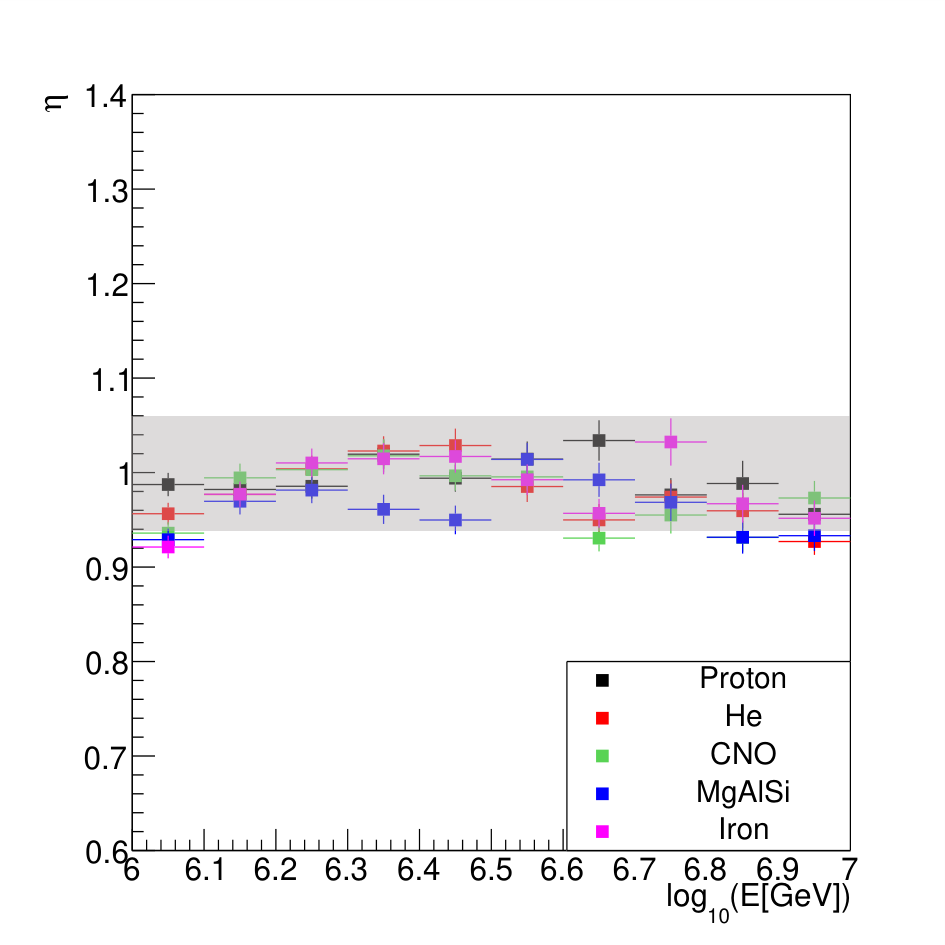
图注：五种初级成分的 $\eta$ 均值与初级能量 $E$ 的关系。灰色阴影标出±6%的范围。
怎么看这张图：这里 $\eta$ 是10米处拟合热中子密度与模拟计数估计密度之比。均值接近1说明平均偏差较小；图中灰带不是单次簇射分辨率或初级能量误差。 核查作者性能数字的正确统计口径。
来源与置信度：arXiv HTML；source verified；https://arxiv.org/html/2610.13183v1/E_eta.png
4. Resistive alignment of a black-hole magnetosphere
- 来源：arXiv / astro-ph.HE
- 链接：https://arxiv.org/abs/2610.13288
- 作者：Ruben Lier, Oliver Porth
- 公告 / 来源日期：2026-10-12
- 阅读层级：相关简报
- 评分：novelty 8/10，importance 7/10，relevance 9/10，final 9.00/10
- 推荐理由：将黑洞磁层对齐归于二阶自旋与显式电阻并以GRMHD检验，机制新颖但适用慢转/电阻区间需界定。
中文题目：磁扩散如何使倾斜黑洞磁层对齐：解析机制及其失效区间
问题、方法与结论：黑洞吞并中子星后可能暂时保留倾斜磁层，其磁极性反转面为何趋向黑洞赤道？作者把该电流片当作磁场零点面跟踪，结合慢自旋 Blandford–Znajek 外部磁场，在小倾角、对称反转层和标量电阻近似下推导对齐速率：几何单位中约为0.48510倍磁电阻乘自旋平方、除以质量尺度平方。三维电阻广义相对论磁流体模拟在中间电阻范围支持这一标度。
意义与贡献：文章为此前数值发现的对齐时间随自旋平方倒数变化提供了具体耗散机制：自旋使外部磁场随纬度发生二阶变形，倾斜片两侧环境因此不对称，磁扩散推动反转面移向对称位置。它解释的是电流片朝向的演化，并非吸积盘的 Bardeen–Petterson 对齐。
可借鉴之处：方法上可借鉴“追踪零点面＋方位角最低阶傅里叶幅度”的分离：将未知等离子体平流项与可计算磁扩散项分开，再用独立的电阻扫描和自旋扫描检验。附录以磁通衰减估计数值电阻，并对一个参数点加密网格，检查平台是否仅由分辨率造成。
局限与关注点：低电阻时速率趋于有限平台，高电阻时又低于线性预测，不能把解析系数外推到所有真实磁层。平台可能涉及电流片不稳定性，尚未完成因果辨识；真实系统还可能需要无碰撞重联与快自旋修正。作者把未解析的非理想平流项置零以隔离机制，不能据此断言该项在天体中不存在。
图2
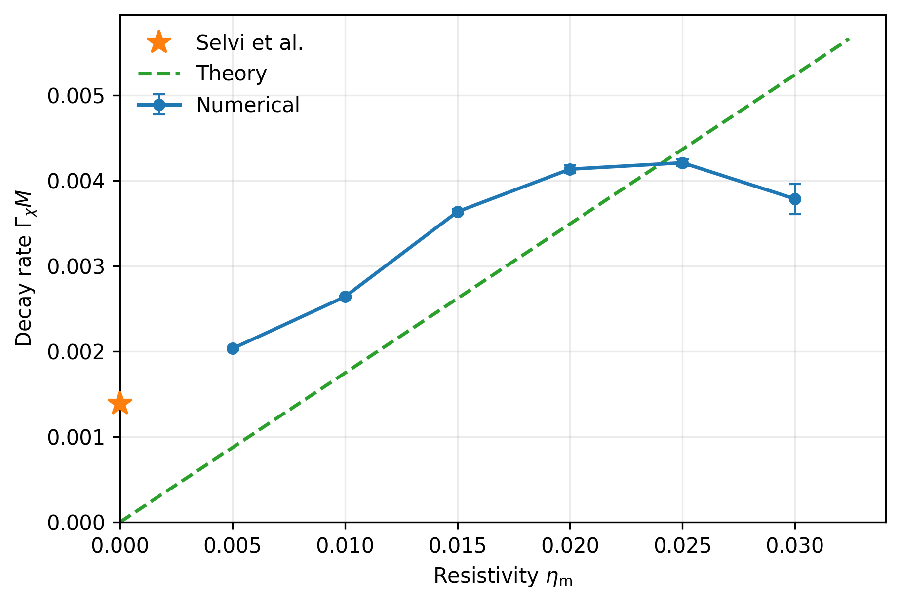
图注：固定黑洞自旋 $a_*=0.6$ 时，对齐速率 $\Gamma_\chi$ 随显式磁电阻 $\eta_{\rm m}$ 的变化。蓝点为模拟后期指数拟合得到的衰减速率，虚线为式1的理论结果。$\eta_{\rm m}=0$ 处的星形符号来自参考文献8的高分辨率理想广义相对论磁流体模拟，利用其 $\tau_\chi/M\simeq20(\Omega_HM)^{-2}$ 拟合及 $\Gamma_\chi=1/\tau_\chi$，在 $a_*=0.6$ 处求值得到。
怎么看这张图：只在中间电阻区比较线性规律。低端平台和高端偏离正是模型边界；零电阻星点来自另一工作，不是本文同一电阻扫描的新点。 同时展示解析机制支持和失败范围。
来源与置信度：arXiv HTML；source verified；https://arxiv.org/html/2610.13288v1/alignment_rate_vs_resistivity_a06.png
5. ASKAP Monitoring of the Rubin Deep Drilling Fields
- 来源：arXiv / astro-ph.HE
- 链接：https://arxiv.org/abs/2610.13011
- 作者：Dougal Dobie, James Freeburn, Iris de Ruiter, Katie Auchettl, James Coulson, Brent Miszalski, Anais Möller, Nikhil Sarin
- 公告 / 来源日期：2026-10-12
- 阅读层级：相关简报
- 评分：novelty 7/10，importance 7/10，relevance 9/10，final 8.70/10
- 推荐理由：ASKAP持续监测与可获取数据/警报基础设施有实际时域价值，五个月数据和源例证支持增量，候选TDE与散射事件不等于已确认机制。
中文题目：ASKAP 配合 Rubin 深钻场开展射电监测：首批光变与实际联测边界
问题、方法与结论：作者在五个 Rubin 深钻场周围开展 ASKAP 943 MHz 射电监测，汇总2026年4—9月49次新观测与879次档案观测。单场约46平方度、典型3小时曝光达到约60微Jy噪声；7月中旬后实际间隔约12天。初步搜索展示 AT2018hyz、SN2024abfo 等源的射电演化，并给出候选潮汐瓦解事件及极端散射事件的光变。同期射电与光学交叉样本中，尚未找到明确的新型共同暂现事件。
意义与贡献：价值在于建立可重复的射电时间基线，并把晚期外流、星周介质和传播效应放进同一监测框架。射电亮度变化可能来自冲击波动力学，也可能来自星际闪烁；没有对应光学爆发的射电变源仍值得跟踪，但不能仅凭变化幅度确认事件类别。
可借鉴之处：处理链修正亮点源被源检出程序拆成多个高斯分量而产生的假变异，并对未检出历元进行强制测光。作者公开图像和光变产品，可用于多波段时间窗匹配。SN2024abfo 的射电模型同时含同步自吸收和自由—自由吸收，以密度节点而非单一稳态风描述星周环境。
局限与关注点：ASKAP 作为调度空档观测，并非与 Rubin 严格同时曝光；当前仅约五个月射电与初期光学覆盖，场内及历元灵敏度也不均匀。深叠加约10微Jy和自动告警属于计划。超新星喷发物与星周密度后验依赖固定电子谱、能量分配和假定风速；候选事件分类及 AT2018hyz 变异的本征/闪烁解释仍需后续验证。
图3
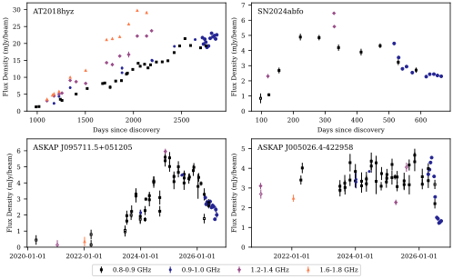
图注：第3节搜索发现的源的射电光变曲线。实心符号为源检出程序目录中的测量，空心符号为强制拟合。AT2018hyz与SN2024abfo的曲线已截去早期未检出数据。AT2018hyz还包含Cendes等2022年、2026年报告的VLA专门监测。本巡天的观测以较大的符号表示。
怎么看这张图：先分清目录测量、强制测光及历史VLA数据，再判断新监测延长了哪段演化。曲线被裁去的未检出历元不能视为不存在；不同源的事件标签仍有确认程度差别。 展示新增时间基线与数据来源区别。
来源与置信度：arXiv HTML；source verified；https://arxiv.org/html/2610.13011v1/lc_fig.svg
说明
评分由 LLM 给出初评，再由本地阈值策略过滤；IACT、TeV 伽马射线和高能中微子天文学按重点方向处理。